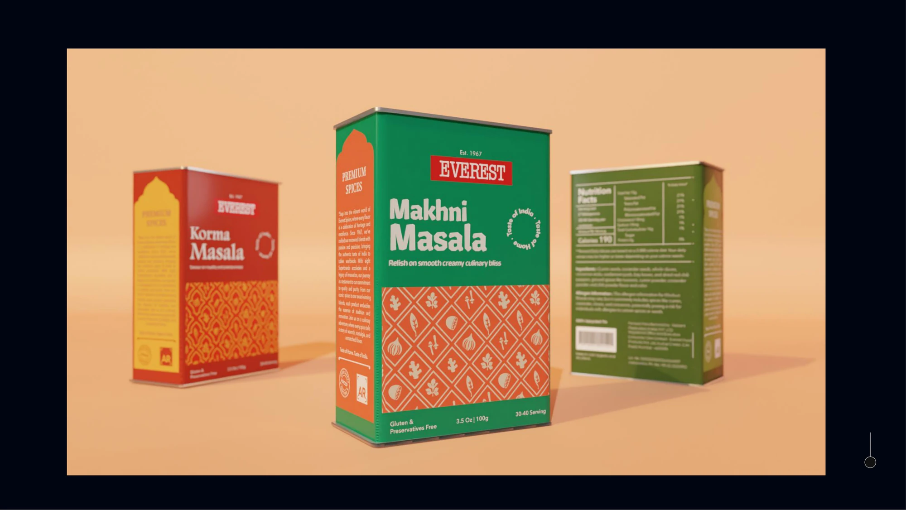
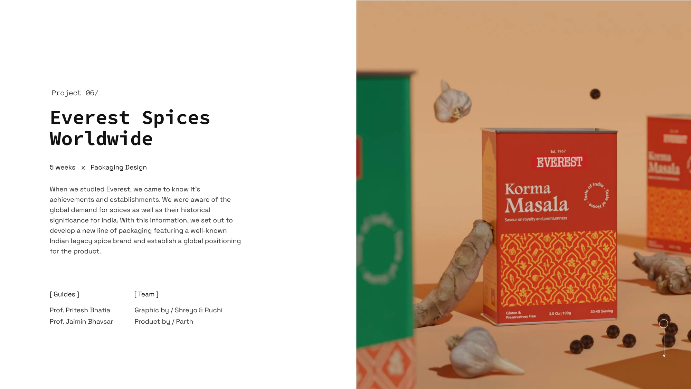
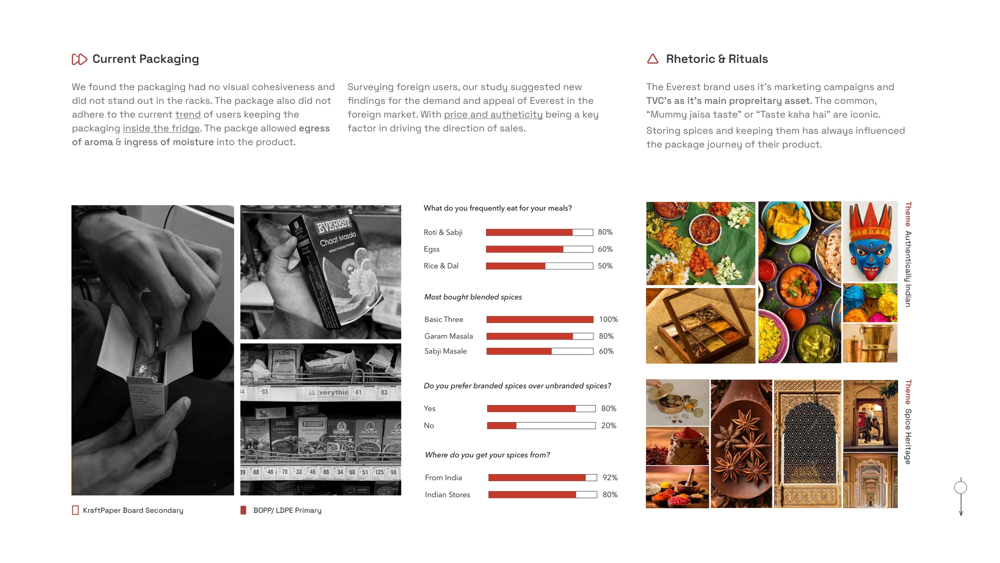
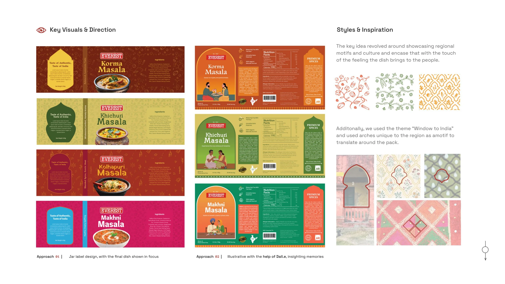
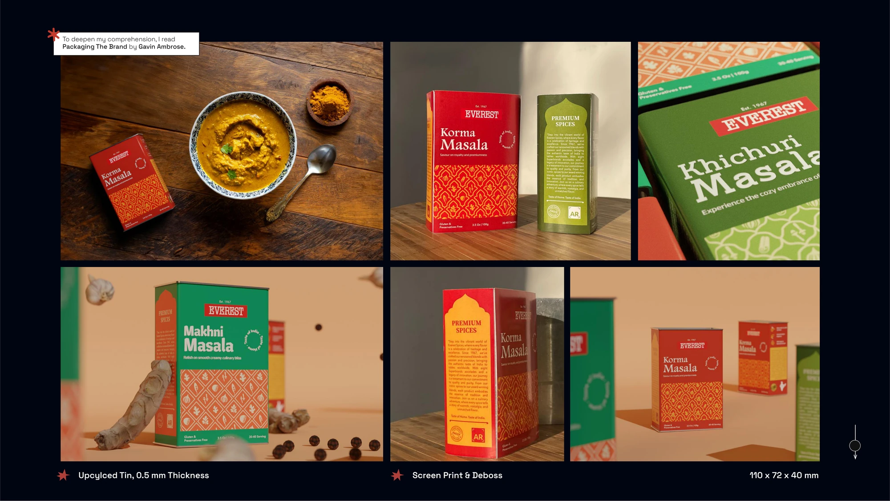

Everest International Packaging
Packaging design for Everest Spices in international markets: an upcycled tin box with a dispenser and measuring tray, featured on Packaging of the World.

Overview
A package that carries the culture, not just the spice.
Brief
Everest's packaging had no visual cohesion for international markets, was not designed for fridge storage, and let aroma out and moisture in.
My part
Packaging designer, consumer researcher, illustrator and 3D artist. I worked on the graphic side with Ruchi, and Parth led the product.
Result
An upcycled tin box system featured on Packaging of the World, built to resolve all three problems.
Context
Will spice packaging feel authentically Indian, abroad?
Everest Spices, established by Vadilal Shah in 1967, is a renowned Indian spice brand with a rich legacy. It has over 45 blends and has been a Superbrands honouree eight times. While Everest emphasizes marketing communication as its distinguishing feature, its packaging lacks a cohesive visual identity suited for international markets.
Three problems, each enough to lose a customer at point of sale.
- No visual cohesivenessThe packaging did not stand out on racks.
- Not made for the fridgeFridge storage is a growing way to keep spices.
- Aroma out, moisture inThe package allowed egress of aroma and ingress of moisture.

Project overview.
Research
Branded Indian spices have demand abroad. The packaging doesn't match it.
Surveying foreign users revealed clear patterns in demand and appeal. Price and authenticity emerged as the key purchasing factors. The data pointed toward a clear opportunity: branded Indian spices have demand abroad, but the packaging doesn't match the expectation.

Current packaging, consumer survey results, and the two themes that came out of them.
Direction
From a fridge-friendly pouch to an upcycled tin.

Concepts and sketches, ending in the tin with a dispenser and a measuring tray. All the sketches and concepts were a personal direction and effort.
Identity
Window to India.
The graphic language drew on a "Window to India" theme, showcasing regional motifs and culture. Arches unique to each region became the central motif, framing AI-assisted illustrations (DALL-E) of the landscapes and traditions behind each spice blend.
The tin is upcycled, 0.5 mm thick, with a screen print and deboss finish, at 110 x 72 x 40 mm.

Key visuals: two label approaches, and the regional arch motifs they draw on.
Outcome
A package that carries the culture, not just the spice.
The final packaging system was recognized and featured on Packaging of the World. The design was built to resolve the three original problems: visual cohesion across the product line, fridge-friendly storage, and aroma-sealed containment.

The final product line: upcycled tin, 0.5 mm thickness, screen print and deboss, 110 x 72 x 40 mm.
Takeaways
What this project built.
- CMFG-NUX design as a framework for packaging decisions. Color, material, finish, graphics, and the new-user experience all working as one system.
- Die cutting and ergonomics applied to a real manufacturing constraint. The dispenser and measuring tray had to be producible at scale, not just modeled in Blender.
- Material science, regulation and compliance for international food packaging. What can be printed on tin. What information is legally required in which markets.
- Manufacturing techniques and product sketching as communication tools between graphic and product teams.
- Deepened comprehension through reading Packaging The Brand by Gavin Ambrose.